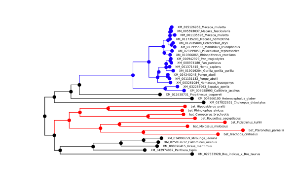
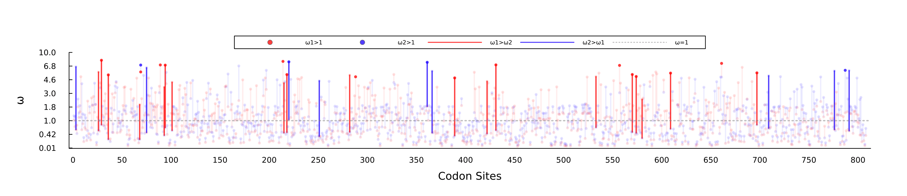
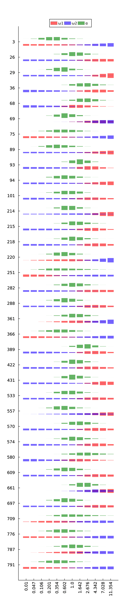

difFUBAR
An interface to difFUBAR (awaiting the correct link)
Example
Reads codon sequences from this FASTA file, and a tagged phylogeny from this NEXUS tree file.
using MolecularEvolution, FASTX, CodonMolecularEvolution
#Trigger PlotsExt
using Plots, Phylo
analysis_name = "output/Ace2"
seqnames,seqs = read_fasta("Ace2_tiny_tagged.fasta");
treestring, tags, tag_colors = import_colored_figtree_nexus_as_tagged_tree("Ace2_tiny_tagged.nex")
df,results = difFUBAR(seqnames, seqs, treestring, tags, analysis_name);Step 1: Initialization. If exports = true, tree showing the assignment of branches to groups/colors will be exported to: output/Ace2_tiny_tagged_input_tree.svg.
Step 2: Optimizing global codon model parameters.
Optimized single α,β LL=-17461.802926840995 with α=1.6881756897953715 and β=0.8305228439241399.
Step 3: Calculating grid of 12096-by-808 conditional likelihood values (the slowest step). Currently on:
0.0% 4.0% 8.0% 12.0% 17.0% 21.0% 25.0% 29.0% 33.0% 37.0% 41.0% 45.0% 50.0% 54.0% 58.0% 62.0% 66.0% 70.0% 74.0% 79.0% 83.0% 87.0% 91.0% 95.0% 99.0%
Step 4: Running Gibbs sampler to infer site categories.
Step 5: Tabulating and plotting. Detected sites:
Site 3 - P(ω1 > ω2):0.0185; P(ω2 > ω1):0.9655; P(ω1 > 1):0.1285; P(ω2 > 1):0.941
Site 26 - P(ω1 > ω2):0.9765; P(ω2 > ω1):0.007; P(ω1 > 1):0.9395; P(ω2 > 1):0.1205
Site 29 - P(ω1 > ω2):0.9865; P(ω2 > ω1):0.003; P(ω1 > 1):0.9985; P(ω2 > 1):0.1785
Site 36 - P(ω1 > ω2):0.9965; P(ω2 > ω1):0.0005; P(ω1 > 1):0.951; P(ω2 > 1):0.027
Site 68 - P(ω1 > ω2):0.9665; P(ω2 > ω1):0.0145; P(ω1 > 1):0.568; P(ω2 > 1):0.0255
Site 69 - P(ω1 > ω2):0.2265; P(ω2 > ω1):0.4945; P(ω1 > 1):0.971; P(ω2 > 1):0.977
Site 75 - P(ω1 > ω2):0.0105; P(ω2 > ω1):0.9735; P(ω1 > 1):0.088; P(ω2 > 1):0.915
Site 89 - P(ω1 > ω2):0.946; P(ω2 > ω1):0.0195; P(ω1 > 1):0.978; P(ω2 > 1):0.227
Site 93 - P(ω1 > ω2):0.977; P(ω2 > ω1):0.0065; P(ω1 > 1):0.9405; P(ω2 > 1):0.0635
Site 94 - P(ω1 > ω2):0.9825; P(ω2 > ω1):0.0035; P(ω1 > 1):0.975; P(ω2 > 1):0.1525
Site 101 - P(ω1 > ω2):0.951; P(ω2 > ω1):0.0175; P(ω1 > 1):0.8605; P(ω2 > 1):0.113
Site 214 - P(ω1 > ω2):0.925; P(ω2 > ω1):0.0175; P(ω1 > 1):0.9975; P(ω2 > 1):0.422
Site 215 - P(ω1 > ω2):0.968; P(ω2 > ω1):0.0095; P(ω1 > 1):0.9025; P(ω2 > 1):0.0915
Site 218 - P(ω1 > ω2):0.98; P(ω2 > ω1):0.0045; P(ω1 > 1):0.969; P(ω2 > 1):0.0925
Site 220 - P(ω1 > ω2):0.003; P(ω2 > ω1):0.9835; P(ω1 > 1):0.2815; P(ω2 > 1):0.986
Site 251 - P(ω1 > ω2):0.0125; P(ω2 > ω1):0.967; P(ω1 > 1):0.0635; P(ω2 > 1):0.7555
Site 282 - P(ω1 > ω2):0.974; P(ω2 > ω1):0.009; P(ω1 > 1):0.9265; P(ω2 > 1):0.099
Site 288 - P(ω1 > ω2):0.93; P(ω2 > ω1):0.0265; P(ω1 > 1):0.957; P(ω2 > 1):0.181
Site 361 - P(ω1 > ω2):0.012; P(ω2 > ω1):0.959; P(ω1 > 1):0.528; P(ω2 > 1):0.988
Site 366 - P(ω1 > ω2):0.0135; P(ω2 > ω1):0.972; P(ω1 > 1):0.0945; P(ω2 > 1):0.8965
Site 389 - P(ω1 > ω2):0.9815; P(ω2 > ω1):0.006; P(ω1 > 1):0.9615; P(ω2 > 1):0.0645
Site 422 - P(ω1 > ω2):0.9675; P(ω2 > ω1):0.0095; P(ω1 > 1):0.9185; P(ω2 > 1):0.084
Site 431 - P(ω1 > ω2):0.988; P(ω2 > ω1):0.0025; P(ω1 > 1):0.994; P(ω2 > 1):0.123
Site 533 - P(ω1 > ω2):0.9535; P(ω2 > ω1):0.021; P(ω1 > 1):0.9235; P(ω2 > 1):0.162
Site 557 - P(ω1 > ω2):0.8025; P(ω2 > ω1):0.0685; P(ω1 > 1):0.974; P(ω2 > 1):0.64
Site 570 - P(ω1 > ω2):0.9805; P(ω2 > ω1):0.0035; P(ω1 > 1):0.97; P(ω2 > 1):0.104
Site 574 - P(ω1 > ω2):0.9805; P(ω2 > ω1):0.0065; P(ω1 > 1):0.9515; P(ω2 > 1):0.0995
Site 580 - P(ω1 > ω2):0.9655; P(ω2 > ω1):0.009; P(ω1 > 1):0.624; P(ω2 > 1):0.04
Site 609 - P(ω1 > ω2):0.9705; P(ω2 > ω1):0.0095; P(ω1 > 1):0.9605; P(ω2 > 1):0.133
Site 661 - P(ω1 > ω2):0.6195; P(ω2 > ω1):0.161; P(ω1 > 1):0.99; P(ω2 > 1):0.9445
Site 697 - P(ω1 > ω2):0.9515; P(ω2 > ω1):0.02; P(ω1 > 1):0.9665; P(ω2 > 1):0.166
Site 709 - P(ω1 > ω2):0.0035; P(ω2 > ω1):0.986; P(ω1 > 1):0.1365; P(ω2 > 1):0.8755
Site 776 - P(ω1 > ω2):0.0105; P(ω2 > ω1):0.965; P(ω1 > 1):0.1385; P(ω2 > 1):0.915
Site 787 - P(ω1 > ω2):0.02; P(ω2 > ω1):0.942; P(ω1 > 1):0.4145; P(ω2 > 1):0.9505
Site 791 - P(ω1 > ω2):0.0115; P(ω2 > ω1):0.9645; P(ω1 > 1):0.1155; P(ω2 > 1):0.908
If exports = true, writing results for all sites to CSV: output/Ace2_tiny_posteriors.csv
Plotting alpha and omega distributions. If exports = true, saved as output/Ace2_tiny_violin_*.pdfHere's a selection of the output files:
output/Ace2_tiny_tagged_input_tree.svg

output/Ace2_tiny_site_omega_means.pdf

output/Ace2_tiny_violin_all_params.pdf

Interface
CodonMolecularEvolution.difFUBAR — FunctiondifFUBAR(seqnames, seqs, treestring, tags, outpath; <keyword arguments>)Takes a tagged phylogeny and an alignment as input and performs difFUBAR analysis. Returns df, results_tuple, plots_named_tuple where df is a DataFrame of the detected sites, results_tuple is a tuple of the partial calculations needed to re-run difFUBAR_tabulate_and_plot, and plots_named_tuple is a named tuple of plots. Consistent with the docs of difFUBAR_tabulate_and_plot, results_tuple stores (alloc_grid, codon_param_vec, alphagrid, omegagrid, tag_colors).
Arguments
seqnames: vector of untagged sequence names.seqs: vector of aligned sequences, corresponding toseqnames.treestring: a tagged newick tree string.tags: vector of tag signatures.outpath: export directory.tag_colors=DIFFUBAR_TAG_COLORS[sortperm(tags)]: vector of tag colors (hex format). The default option is consistent with the difFUBAR paper (Foreground 1: red, Foreground 2: blue).pos_thresh=0.95: threshold of significance for the posteriors.iters=2500: iterations used in the Gibbs sampler.binarize=false: if true, the tree is binarized before the analysis.verbosity=1: as verbosity increases, prints are added accumulatively.- 0 - no prints
- 1 - show current step and where output files are exported
- 2 - show the chosen
difFUBAR_gridversion and amount of parallel threads.
exports=true: if true, output files are exported.code=MolecularEvolution.universal_code: genetic code used for the analysis.optimize_branch_lengths=false: if true, the branch lengths of the phylogenetic tree are optimized.version::Union{difFUBARGrid, Nothing}=nothing: explicitly choose the version ofdifFUBAR_gridto use. Ifnothing, the version is heuristically chosen based on the available RAM and Julia threads.t=0: explicitly choose the amount of Julia threads to use. If0, the degree of parallelization is heuristically chosen based on the available RAM and Julia threads.
Julia starts up with a single thread of execution, by default. See Starting Julia with multiple threads.
For a simple and often optimal configuration
- Launch Julia in the following manner:
julia -t auto - Keep the default values of the kwargs
versionandt
This lets Julia decide the amount of Julia threads and lets CodonMolecularEvolution.jl decide the difFUBARGrid subtype to dispatch on and the degree of parallelization.
difFUBARGrid
Subtypes that decide which method to use for the grid likelihood computations.
CodonMolecularEvolution.difFUBARBaseline — TypeConstructor
difFUBARBaseline()Description
Use the trivial implementation of the grid likelihood computations, i.e. 1 thread without sub-tree likelihood caching.
See also: difFUBARParallel, difFUBARTreesurgery, difFUBARTreesurgeryAndParallel.
CodonMolecularEvolution.difFUBARParallel — TypeConstructor
difFUBARParallel()Description
Extend the baseline version by parallelizing the grid calculations. Requires julia to be launched with the t switch. Using t computational threads, where t is sufficiently small, memory complexity is usually O(t) and time complexity O(1/t). Empirical tests suggests that t should not be higher than the machine's total CPU threads and usually not higher than half of it's total threads.
See also: difFUBARBaseline, difFUBARTreesurgery, difFUBARTreesurgeryAndParallel.
CodonMolecularEvolution.difFUBARTreesurgery — TypeConstructor
difFUBARTreesurgery()Description
Use sub-tree likelihood caching described in the "Methods" section of the difFUBAR paper. Use more memory than the baseline version but be significantly faster, if purity is high.
See also: difFUBARBaseline, difFUBARParallel, difFUBARTreesurgeryAndParallel.
CodonMolecularEvolution.difFUBARTreesurgeryAndParallel — TypeConstructor
difFUBARTreesurgeryAndParallel()Description
Use parallelization and sub-tree likelihood caching. The most performant version in most cases. Use more memory than other versions.
See also: difFUBARBaseline, difFUBARTreesurgery, difFUBARParallel.